Legend: Booked locked in Open not booked yet, still changeable Alternate not chosen yet. Every line carries one. Summary in Booked & Open.
The Paris week is unchanged. Then five extra days: a night facing Mont-Saint-Michel, the D-Day coast and an evening ferry to a night in Portsmouth (or the alternate via Paris), and three nights in London with the birthday dinner on Mon Dec 7. Same rhythm: slow mornings, one light anchor a day, one proper dinner.
Weather: Normandy and London in December are cool, grey and damp, highs around 45–48 °F, windy on the coast; sunset ~4:55 PM in Normandy and ~3:50 PM in London. Pack layers, a waterproof jacket and good shoes.
Booked Flights (United Polaris via Chicago): Out Sat Nov 28: UA5867 Traverse City 2:18 PM → O'Hare 2:55 PM, then UA987 O'Hare 6:45 PM → Paris CDG 9:55 AM Nov 29. Home Thu Dec 10 (open-jaw from London Heathrow T2): UA928 1:35 PM → O'Hare 4:55 PM (seats 4D/5F), then UA2304 O'Hare 7:45 PM → Traverse City 9:59 PM (First, 2E/2F).
Sat Nov 28 · Travel day
Anchor: Get to Paris rested.
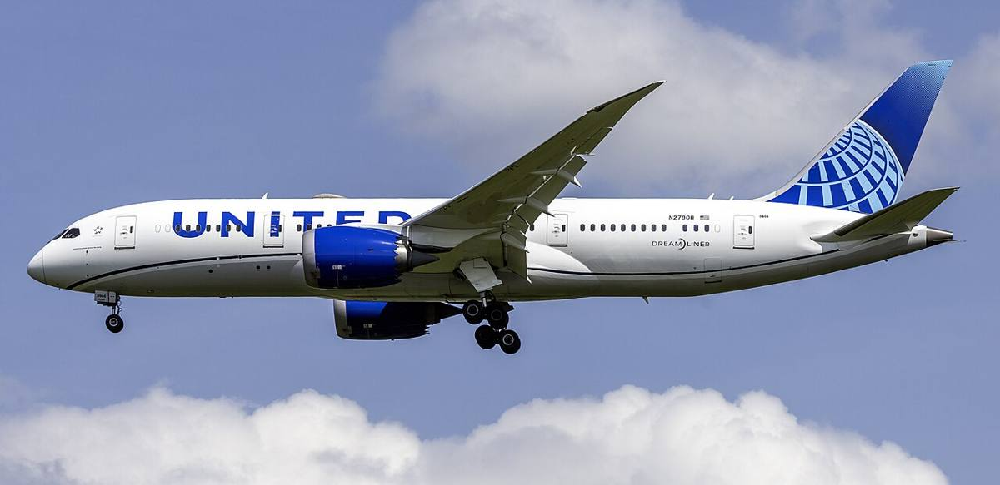
| Morning Open | Pack, and a relaxed early afternoon departure from home. |
|---|---|
| Afternoon Booked | UA5867 2:18 PM → O'Hare 2:55 PM (seats 2C/2D), short hop from Traverse City (TVC) to Chicago O'Hare on United. Time in the United Polaris lounge: sit-down dinner, shower suite, quiet room. |
| Evening Booked | Overnight United Polaris flight Chicago → Paris CDG. Dinner was in the lounge, so sleep early. UA987 O'Hare 6:45 PM → Paris CDG 9:55 AM Sun Nov 29 (seats 3D/3F). |
Sun Nov 29 · Arrive and settle
Anchor: None. Land, rest, tub.
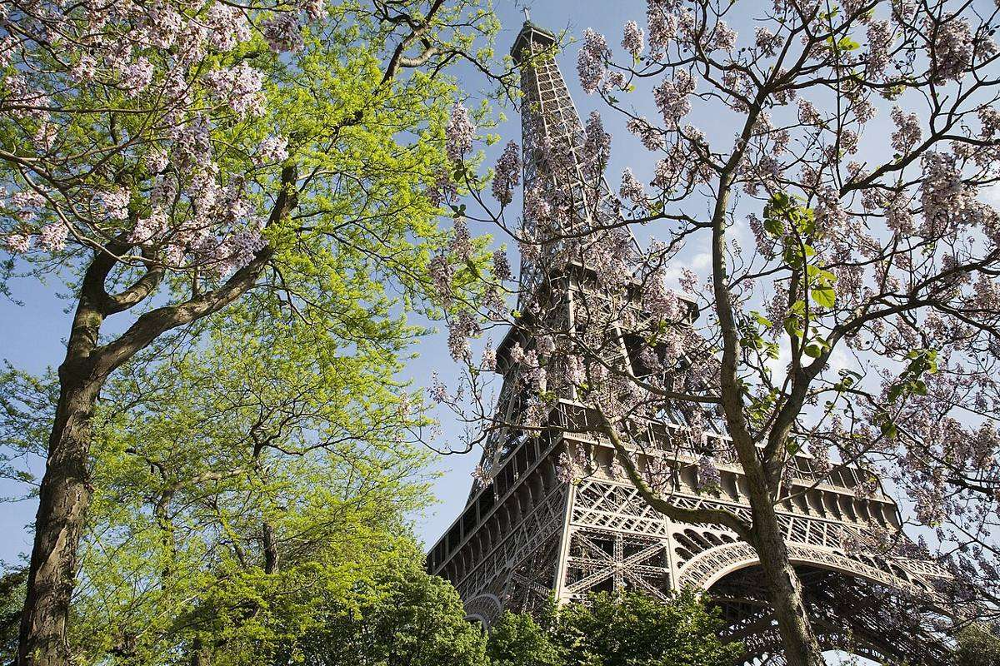
| Morning Open | Land at CDG Terminal 1 mid-morning. Pre-booked car to the hotel (hotel car or Welcome Pickups). Drop bags at Hôtel Le Cinq Codet around noon. |
|---|---|
| Afternoon OpenLe Cinq Codet booked; activities open | Latte at Noir – Rue de Grenelle, pastry from La Parisienne. Check in at 3 PM, nap and the tub. Optional wander down Rue Cler. |
| Evening Open | Dusk walk to the Champ de Mars (sunset ~4:57 PM; the Tower sparkles on the hour). 7:30 PM dinner at Bistrot des Fables. Jenny: salmon with sorrel or sea bream. Dessert: bourbon-vanilla crème brûlée. |
Mon Nov 30 · Montmartre at sunset + Moulin Rouge
Anchor: One evening outing.
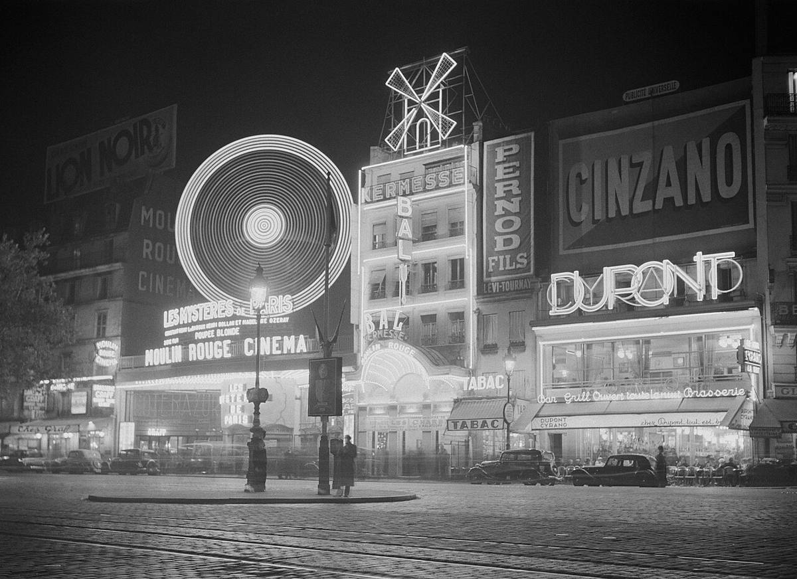
| Morning Open | Late start. Latte at Dialogues Coffee, then tub and rest. |
|---|---|
| Afternoon Open | 1 PM lunch at Les Cocottes (Jenny: roast cod). ~3:15 taxi to Montmartre; dress smart for tonight. Ride the funicular up to Sacré-Cœur. |
| Evening Open | Sunset from the basilica steps (~4:56 PM), stroll Place du Tertre. Moulin Rouge Dinner & Show: doors 6:45, dinner with the orchestra at 7 PM, Féerie show at 9 PM. Jenny: the Belle Époque menu (smoked salmon, then pike-perch) — flag the shellfish allergy when booking. Smart dress, no trainers. Taxi home ~11 PM. Book only via reservations.moulinrouge.fr. |
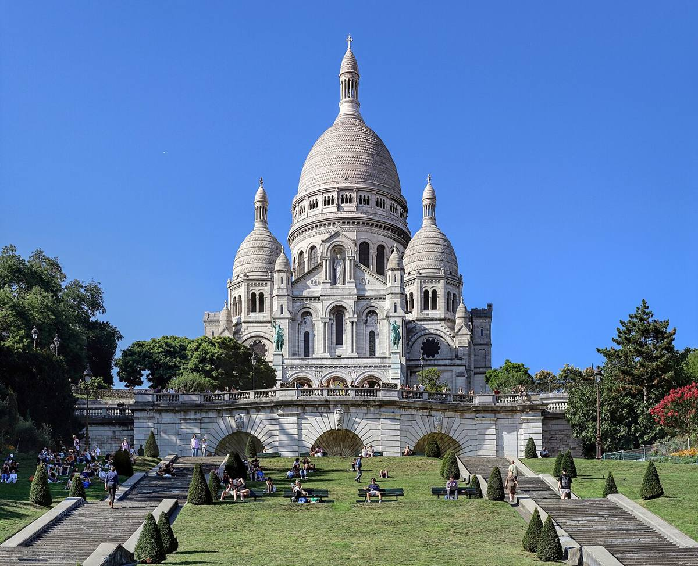
Tue Dec 1 · Catacombs + lunch at Baguette
Anchor: The Catacombs, then a long lunch.
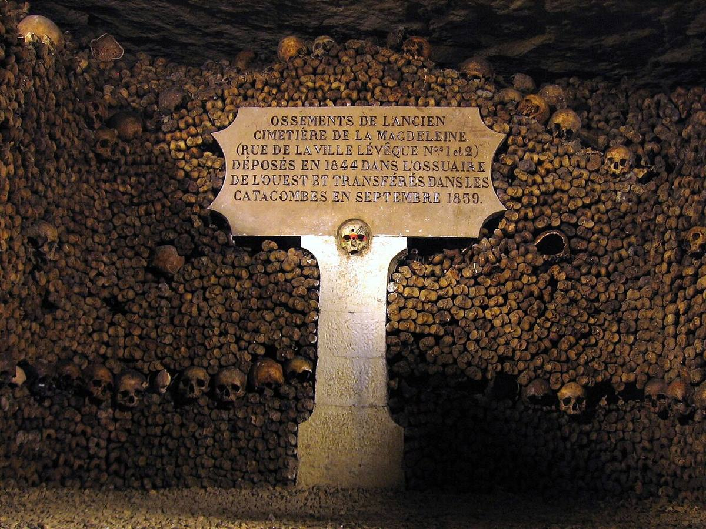
| Morning Open | ~9:15 filter coffee at Coutume. Metro line 6 to Denfert-Rochereau. 10:30 timed entry at the Catacombes de Paris (~1 hr, 131 steps down / 112 up, ~14 °C inside — bring a layer, no big bags). |
|---|---|
| Afternoon Open | Taxi to Montorgueil. 12:15 lunch at Baguette, French-Asian small plates. Jenny: salmon tartare with ginger, truffle risotto, smoked aubergine — skip the shrimp spring roll. Dessert: black-sesame crème brûlée. Keep it light. Taxi back, rest and tub. |
| Evening Open | 7:30 PM dinner at Café Caillou. Jenny: fresh salmon, mushroom risotto or aubergine gratin. Clark: a Chinon by the bottle. |
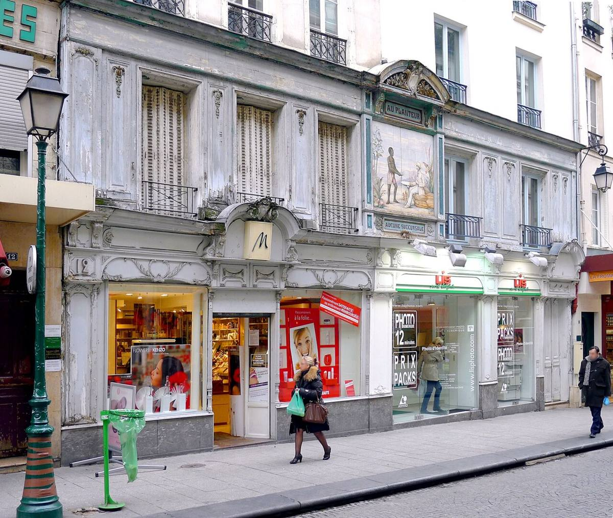
Wed Dec 2 · Versailles + Gordon Ramsay au Trianon
Anchor: The palace, then the starred dinner. Long day; taxi home.
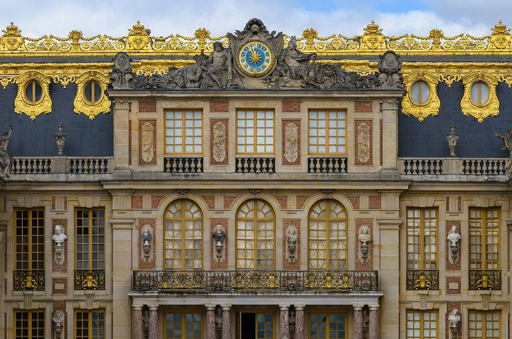
| Morning Open | ~9:15 pastry; dress smart casual for dinner. ~9:45 RER C from Champ de Mars–Tour Eiffel to Versailles Château Rive Gauche (~35–40 min). 11:00 timed entry, Palace of Versailles (Passport ticket). |
|---|---|
| Afternoon Open | ~1 PM lunch at Ore – Ducasse in the palace grounds. Jenny: truite aux amandes; skip the raw scallops. ~2:30 gardens, then the Trianons and Marie-Antoinette's Hamlet (last entry 4:45). |
| Evening Open | ~5 PM drinks at the Waldorf Astoria Trianon Palace bar: an Old Fashioned for Clark, Crémant for Jenny. 7:30 PM Gordon Ramsay au Trianon ★ — request a pescatarian, shellfish-free menu at booking (signatures use lobster and cockles). ~10:15 pre-booked taxi back to the hotel: the RER C closes evenings from 11 PM for works. |
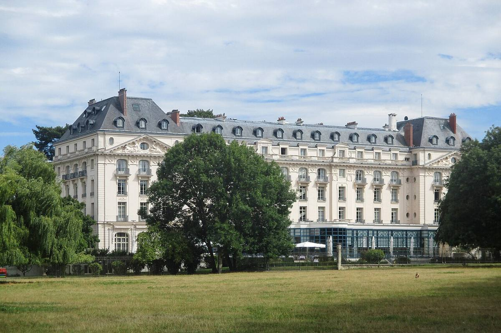
Thu Dec 3 · The big-view day
Anchor: The 5 PM Seine cruise.
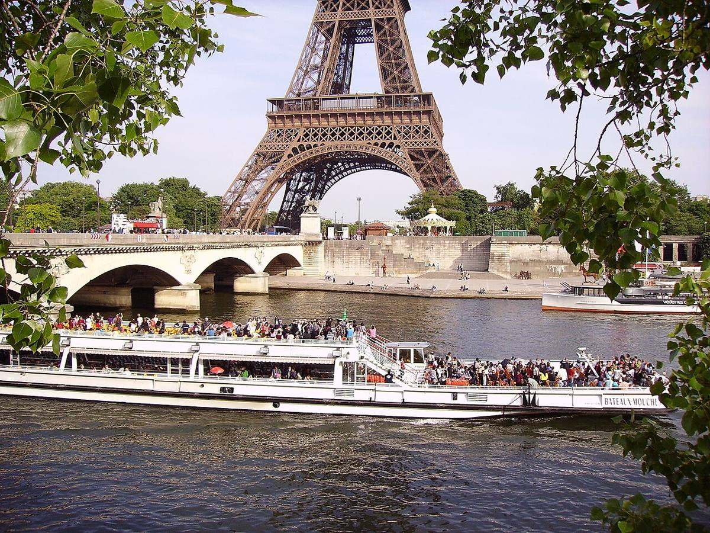
| Morning Open | ~10:00 slow coffee at Dialogues. Optional walk over Pont d'Iéna to the Trocadéro esplanade for the classic Tower view. |
|---|---|
| Afternoon Open | 1 PM light lunch at Les Cocottes. Tub and rest. Leave 4:35, dressed warm. |
| Evening Open | 5 PM cruise with Bateaux Parisiens (Port de la Bourdonnais), back ~6 PM as the Tower sparkles. Old Fashioned at Minuit Express. ~7:45 dinner at Le Bosquet (Jenny: grilled cod, sauce vierge — oysters on the menu, flag the allergy). |
Fri Dec 4 · Super-relaxed last day
Anchor: None. Early night.
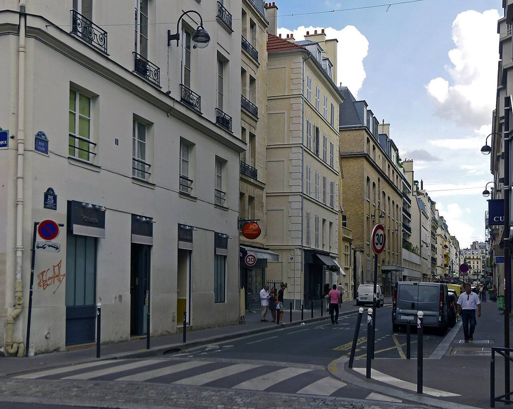
| Morning Open | Late breakfast from La Parisienne, latte at Noir, last stroll down Rue Cler. |
|---|---|
| Afternoon Open | Light lunch at Les Cocottes. Hotel spa and a long soak. Pack; confirm the morning car. |
| Evening Open | 7 PM farewell dinner at La Fontaine de Mars. Jenny: salmon in salt crust or roasted sea bass. Dessert: crème brûlée à la vanille. Lights out ~10. |
Sat Dec 5 · Paris → Mont-Saint-Michel
Anchor: Arrive at the Mont by sunset.
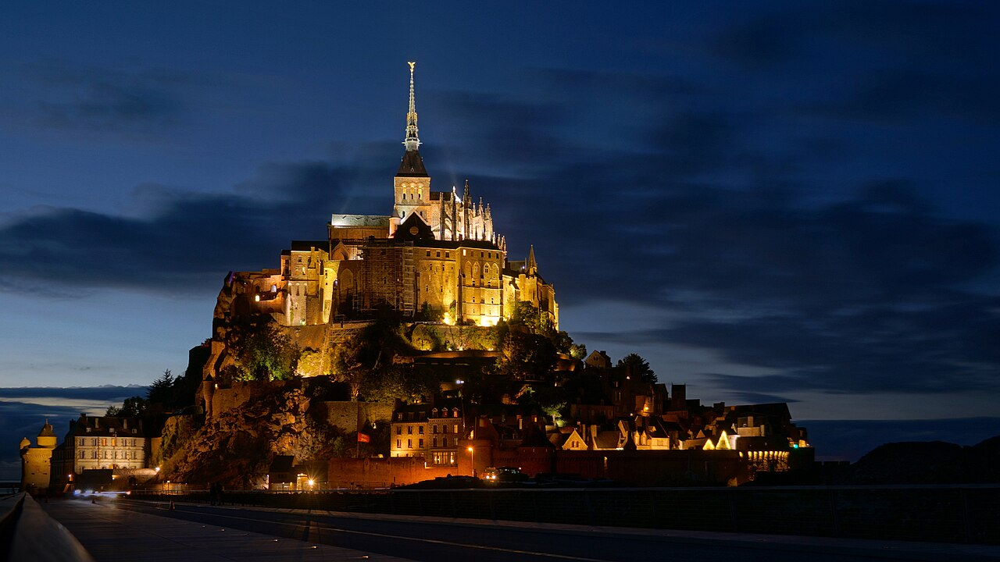
| Morning OpenLe Cinq Codet checkout booked; TGV open | Slow breakfast and check out of Le Cinq Codet (~10:00). Taxi to Paris-Montparnasse. TGV INOUI 8615 Montparnasse 10:57 AM → Rennes 12:25 PM, direct (SNCF Connect timetable; times from the current timetable, confirm when December sales open). Earlier backup: TGV 8609, 10:00 → 11:25. |
|---|---|
| Afternoon Open | Lunch at Rennes station, then pick up a premium sedan or SUV at SIXT Rennes station (one-way, returned in Caen on Sunday). Easy, toll-free drive to the Mont (~1 hr 15), arriving ~2:45 PM. No-car fallback: the Keolis Rennes → Mont-Saint-Michel bus, timed to the Paris TGVs. Check in at the Dec 5 hotel: Jenny picks Option A or B (see below). |
| Evening Open | Sunset (~4:55 PM) over the bay, then and a quiet walk up the lit, empty village. Dinner at your hotel (both have a restaurant). Jenny: local fish of the day; Normandy is shellfish country, so flag the allergy every time. |
Sat Dec 5 hotel: two options for Jenny Open
| Option A: outside the walls | Option B: inside the walls |
|---|---|
| Le Relais Saint-Michel (Signature room, Mount view), on the mainland causeway. About €319/night (approx. estimate; source: earlier flexible quote). | Les Terrasses Poulard on the Grande Rue: bay-view double, ask for the upper L'Ermitage annex. About €280–450/night (approx. estimate; source: guidebook). Alternative inside the walls: La Mère Poulard (no price found). |
| Luggage: park at the door, no steps. Easiest by far. | Luggage: park on the mainland, shuttle, then walk up cobbles and steps; the annex is reached by steps and terraced gardens. Pack a small overnight bag and leave the big cases in the car. |
| Evening: calm, but you take the free shuttle across to walk the lit village. | Evening: the magic one. Day-trippers leave, and you have the lit, empty streets and ramparts to yourselves. |
| View: the whole lit Mont from your window, the classic postcard. | View: bay views from the upper rooms; you are inside the picture, not looking at it. |
| Dinner: hotel restaurant facing the Mont (nightly 7–9:30 PM). Morning: shuttle back for the 9:30 abbey. | Dinner: La Mère Poulard's famous omelette next door, or a Grande Rue brasserie; fish for Jenny, flag the shellfish allergy. Morning: abbey is a few minutes uphill. |
Sun Dec 6 · Abbey, D-Day coast, then the evening ferry
Anchor: Abbey at opening, the American Cemetery, and the 4:30 PM sailing to England.
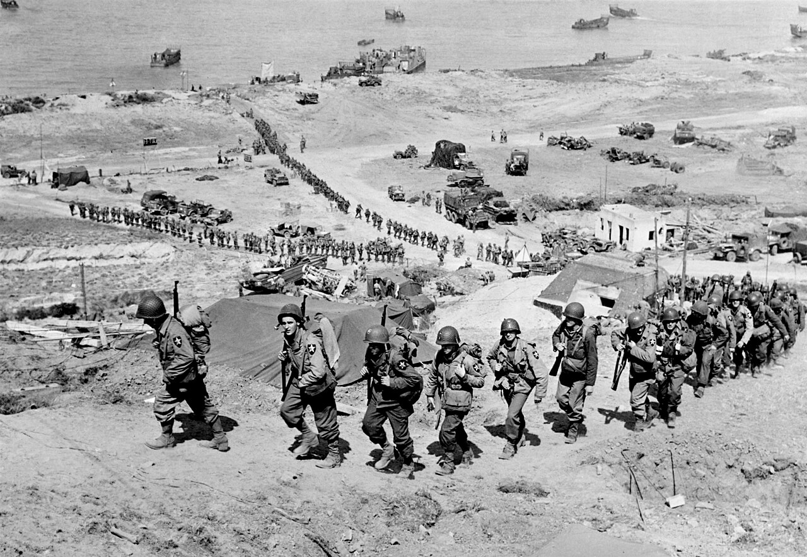
| Morning Open | Breakfast with the view. 9:30 AM opening at the Mont-Saint-Michel Abbey (~45 min; dress warm). Check out and leave the Mont at ~10:30. |
|---|---|
| Afternoon Open | Drive ~1 hr 50 on the A84 to the Normandy American Cemetery above Omaha Beach; picnic or café lunch, about 1 hr 15 there (~12:15–1:30). Drive ~50 min to Caen station and drop the car by ~2:30 (confirm Sunday key drop with SIXT), then a 20-min taxi to the Ouistreham ferry port, arriving ~3:00. Foot-passenger check-in closes at 3:30. |
| Evening Open | Brittany Ferries Caen-Ouistreham 4:30 PM → Portsmouth 9:30 PM UK time (~6 hrs; the 4:30 sailing runs every day of the year). Book a cabin to nap, plus dinner on board (Jenny: fish, flag the shellfish allergy). Disembarking takes ~30 min, then a 5-min taxi to The Ship Leopard on The Hard (recommended, open; fallback the Royal Maritime Hotel, check-in until 1 AM). Straight to bed. If the ferry is cancelled: the next sailing is the 11:30 PM overnight from Caen (cabin, arrives about 6:15 AM), or take the train Caen → Paris (~2 hr) and the Eurostar on Dec 7 (see the alternate plan below). |
Mon Dec 7 · Birthday · Portsmouth → London
Anchor: A slow morning and lunchtime arrival in London, then the birthday dinner.
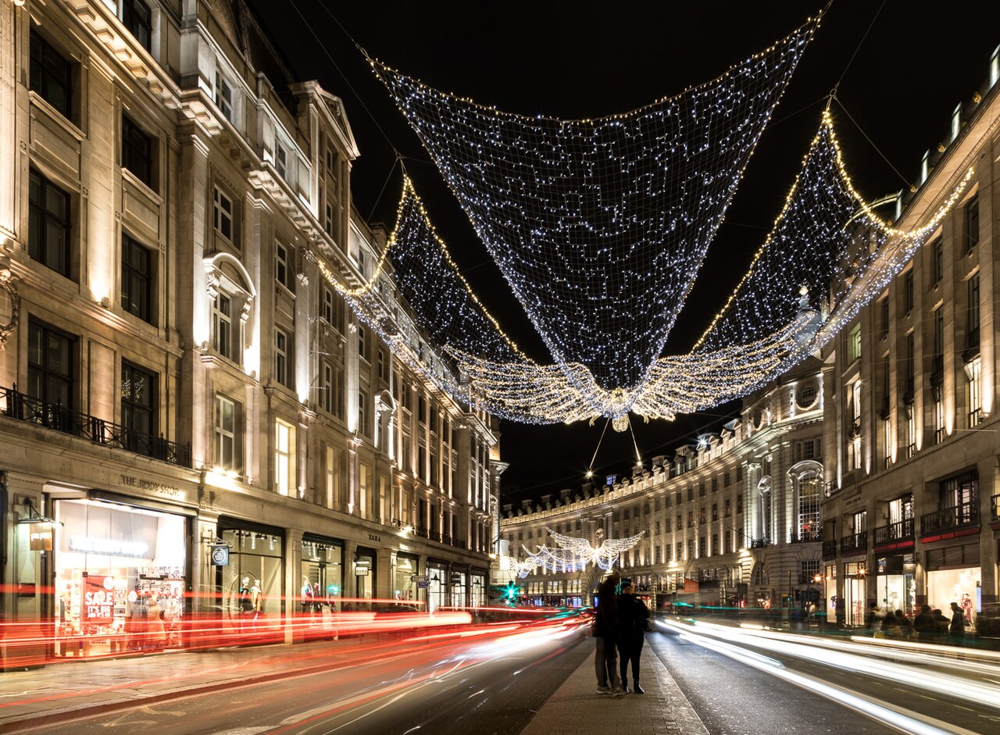
| Morning Open | Breakfast at the hotel, then a short stroll on The Hard past HMS Warrior to the station. South Western Railway direct train Portsmouth Harbour 10:15 AM → London Waterloo 11:51 AM (per SWR's Sep 2026 timetable; trains about every 30 min if you want to linger). |
|---|---|
| Afternoon Booked | Taxi from Waterloo to W London at 10 Wardour Street, Leicester Square (~15 min), arriving ~12:15 PM. Booked: Standard King; birthday noted and an upgrade requested. Check-in is 3 PM, so drop bags and have lunch in Soho or Chinatown (a 2–5 min walk), then rest. Leicester Square and Piccadilly Circus Tube stations are each ~3 min away. Time to dress for dinner. |
| Evening Booked | Birthday dinner at Gymkhana, the Michelin-starred Indian at 42 Albemarle Street, Mayfair, 9:15 PM (we asked for an earlier table; it moves if they offer one). ~12–15 min walk from the hotel via Piccadilly Circus, or a 5-min taxi. Smart casual. Jenny's pescatarian diet and shellfish allergy and the birthday are noted for the restaurant. Old Fashioned first at the W Lounge; Champagne or English sparkling for Jenny. |
Tue Dec 8 · Churchill War Rooms + Christmas at Kew
Anchor: A morning museum, then the lights at Kew.
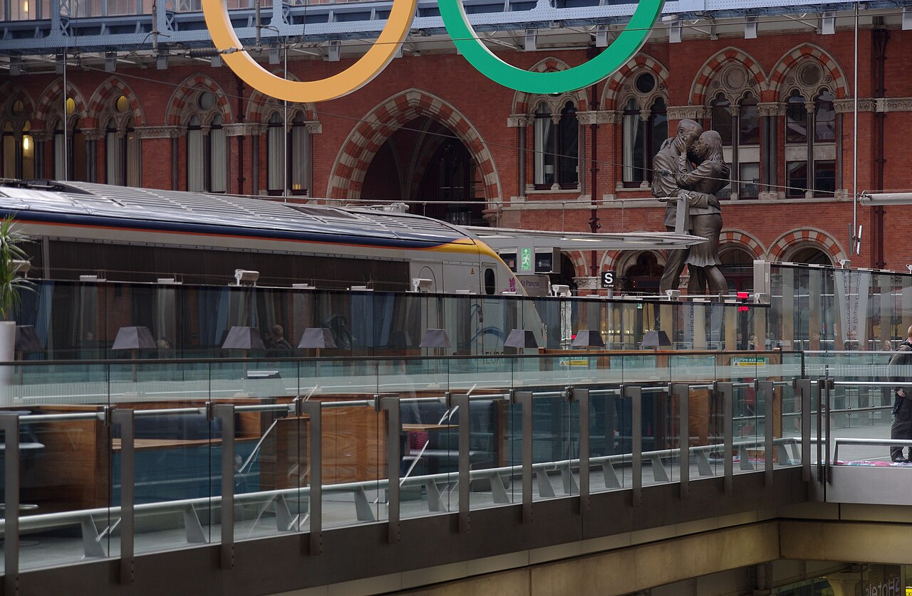
| Morning Open | Slow morning. ~11 AM timed entry to the Churchill War Rooms (~1 hr 30; taxi ~15 min). Alternative: the Tower of London and the Crown Jewels. The Bayeux Tapestry at the British Museum (~15 min walk from the hotel) is sold out; worth checking for returns. |
|---|---|
| Afternoon Open | Lunch near Westminster, then back to the hotel to rest. |
| Evening Open | Taxi (~45 min) to Christmas at Kew for an early-evening timed entry, the illuminated trail through the gardens (~1 hr 30, dress warm). Taxi back and a relaxed late dinner. |
Wed Dec 9 · London at Christmas
Anchor: Winter Wonderland at dusk.
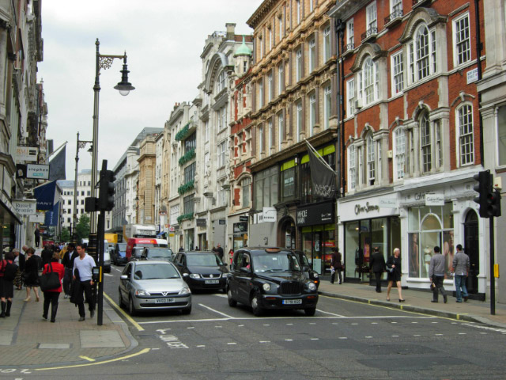
| Morning Open | Late breakfast. Wander Soho and Covent Garden, both on the hotel's doorstep (Covent Garden is ~7 min on foot). |
|---|---|
| Afternoon Open | Afternoon tea or a long lunch. Rest and pack. |
| Evening Open | Stroll into Hyde Park Winter Wonderland after dark (open Nov 19 – Jan 3). Farewell dinner; early night. |
Thu Dec 10 · Fly home from Heathrow
Anchor: A relaxed last morning, then Polaris home.
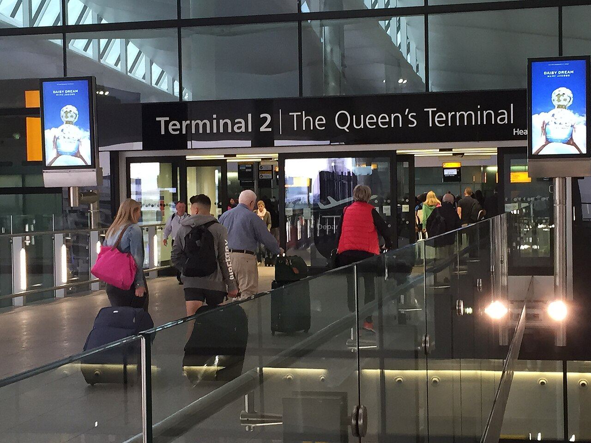
| Morning OpenW London booked; transfer open | Late breakfast and a slow pack. Leave the hotel at ~10:15 AM: 3-min walk to Leicester Square and the Piccadilly line direct to Heathrow Terminals 2 & 3 (~50 min), or a 10-min walk to Tottenham Court Road and the Elizabeth line (~35 min), arriving ~11:15 for the 1:35 PM flight. With bags, a taxi (~1 hr) is the easy alternative. |
|---|---|
| Afternoon Booked | UA928 Heathrow T2 1:35 PM → Chicago O'Hare 4:55 PM, United Polaris (Boeing 767-300). Seats: Clark 4D, Jenny 5F (center seats, one diagonally behind the other). |
| Evening Booked | 2h50 connection at O'Hare: clear passport control and customs, re-check bags and re-screen, then a sit-down dinner in the United Polaris lounge (Terminal 1, near gate C18). UA2304 O'Hare 7:45 PM → Traverse City 9:59 PM, First, seats 2E/2F. |
Alternate plan, Sun Dec 6 – Mon Dec 7: via Paris
Clark and Jenny still deciding; the ferry plan stays primary.
| Sun Dec 6 | Abbey at 9:30 as planned, then drive Mont-Saint-Michel → Paris (~4 hr; one-way rental fee applies; drop the car in Paris). One night in Paris (hotel to be chosen). |
|---|---|
| Mon Dec 7 | Late-morning Eurostar from Paris Gare du Nord (e.g. ~11:13 AM, ~2h20; check in 45–60 min before; exact times to be confirmed), arriving London St Pancras ~12:30–1 PM, then taxi to the W London. |
| Replaces | The Ouistreham ferry, the Caen car drop and the Portsmouth night. Why: it does not depend on Channel weather. |
Booked (locked in)
| Item | What |
|---|---|
| Booked Flights out, Sat Nov 28 | UA5867 Traverse City 2:18 PM → O'Hare 2:55 PM (2C/2D); UA987 O'Hare 6:45 PM → Paris CDG 9:55 AM Nov 29 (3D/3F). |
| Booked Paris hotel, Nov 29 – Dec 5 | Le Cinq Codet, 7th arrondissement. |
| Booked London hotel, Dec 7 – 10 | W London, 10 Wardour Street, Leicester Square, London W1D 6QF, Standard King (birthday noted, upgrade requested). |
| Booked Birthday dinner, Mon Dec 7 | Gymkhana, 42 Albemarle St, Mayfair, 9:15 PM (asked for earlier). Smart casual. |
| Booked Flights home, Thu Dec 10 | UA928 Heathrow T2 1:35 PM → O'Hare 4:55 PM (4D/5F); UA2304 O'Hare 7:45 PM → Traverse City 9:59 PM (First, 2E/2F). |
Open (not booked yet, still changeable)
| Item | What |
|---|---|
| Open Mont-Saint-Michel hotel, Sat Dec 5 | Option A: Le Relais Saint-Michel (outside, Mount view) or Option B: Les Terrasses Poulard (inside the walls; alt La Mère Poulard). Jenny picks; see Dec 5. |
| Open Portsmouth hotel, Sun Dec 6 | Recommended: The Ship Leopard Boutique Hotel on The Hard (~2 min from Portsmouth Harbour station, adults only, harbour-view King), from about £132/night (approx. estimate; source: Tripadvisor “from” price). Fallback: Royal Maritime Hotel (check-in until 1 AM; no price found). |
| Open Rental car | SIXT automatic estate or SUV with room for luggage, Rennes station Sat Dec 5 → Caen station Sun Dec 6, mid-afternoon drop (one-way, same country). |
| Open TGV, Sat Dec 5 | TGV 8615 Paris-Montparnasse 10:57 AM → Rennes 12:25 PM. |
| Open Ferry, Sun Dec 6 | Brittany Ferries Caen-Ouistreham 4:30 PM → Portsmouth 9:30 PM (foot passengers, cabin). |
| Open Train, Mon Dec 7 | SWR Portsmouth Harbour 10:15 AM → London Waterloo 11:51 AM (SWR Sep 2026 timetable); trains about every 30 min as backup. |
| Open Paris activities and dinners | Moulin Rouge (decision due Sun Nov 1), Catacombs, Versailles, the Seine cruise and the Paris dinner tables. |
| Open Airport transfers | CDG → hotel Nov 29; hotel → Heathrow Dec 10 (Tube or taxi on the day). |
| Open Alternate: via Paris (Dec 6–7) | Alternate – not chosen yet Drive to Paris, one night there, Eurostar Dec 7. Replaces the ferry, Caen drop and Portsmouth night; see the alternate box. |
| Open London sights | Churchill War Rooms or Tower of London, Christmas at Kew (Tue Dec 8), Winter Wonderland (Wed Dec 9). Bayeux Tapestry at the British Museum is sold out (check for returns). |
Dining notes
Jenny: pescatarian, shellfish allergy
Je suis allergique aux fruits de mer et crustacés. Je mange du poisson mais pas de fruits de mer.
In London: "Pescatarian, with a shellfish allergy — no prawns, crab, lobster, scallops, mussels or oysters, and no shellfish stock."
Normandy menus lean on oysters, mussels and scallops; ask for the fish of the day (sole, bar, cabillaud, saumon). Jenny: Crémant or Champagne in France, English sparkling in London. Clark: bold reds, an Old Fashioned at the hotel bar, crème brûlée when it appears.
Photo credits
- eiffel: Vedettes de Paris from the Eiffel Tower, April 2011.jpg — Cristian Bortes from Cluj-Napoca, Romania, CC BY 2.0
- sacre: Paris - Basilique du Sacré-Cœur de Montmartre - 2025-09-30 23-31-57 001.jpg — Giò Terra (Terragio67), CC BY-SA 4.0
- moulin: De Moulin Rouge in Parijs bij avond, Bestanddeelnr 254-5695.jpg — Willem van de Poll, CC0
- catacombs: Catacombes de Paris edit.jpg — Wikimedia Commons, CC BY-SA 3.0
- versailles: Main Façade, Palace of Versailles, Cour Royale.jpg — Julian Lupyan, Public domain
- trianon: Trianon Palace vu du parc.jpg — Thomon, CC BY-SA 4.0
- seine: Bateau Mouche on river Seine near the Pont d'Iéna and Eiffel Tower in Paris, France.jpg — Jean-Pierre, CC BY-SA 2.0
- ruecler: P1200290 Paris VII rue Cler rwk.jpg — Mbzt, CC BY-SA 3.0
- champ: Paris - The Eiffel Tower in spring - 2307.jpg — Jorge Royan, CC BY-SA 3.0
- montorgueil: P1010070 Paris Ier Rue Montorgueil n°12 reductwk.JPG — Mbzt, CC BY-SA 3.0
- plane: United Boeing 787-8 N27908 IAD VA2.jpg — Acroterion, CC BY-SA 4.0
- msm: Mont Saint-Michel at night - BeBo86.jpg — BeBo86, CC BY-SA 4.0
- bayeux: Bayeux Historic Centre.jpg — Anton Bielousov, CC BY-SA 3.0
- stpancras: St Pancras railway station MMB C0 373213.jpg — mattbuck (category), CC BY-SA 3.0
- london: Regent Street Christmas Lights 2017 - geograph.org.uk - 5642213.jpg — Christine Matthews, CC BY-SA 2.0
- mayfair: New Bond Street, Mayfair - geograph.org.uk - 966302.jpg — Stephen McKay, CC BY-SA 2.0
- heathrow: Departure hall entrance, London Heathrow Terminal 2, UK - 20150621.jpg — Smuconlaw, CC BY-SA 4.0
- omaha: 2nd Infantry Division, E-1 draw, Easy Red sector, Omaha Beach, D+1, June 7, 1944.jpg — US Army Signal Corps, Public domain
- Restaurant images are screenshots of each venue's own website.